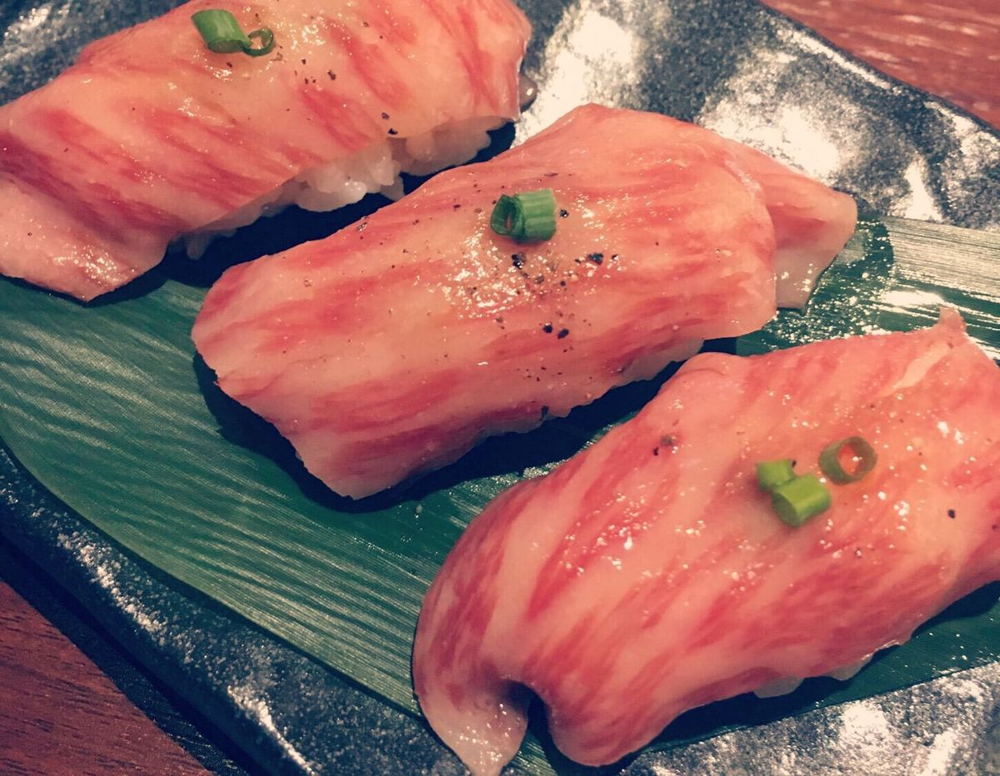
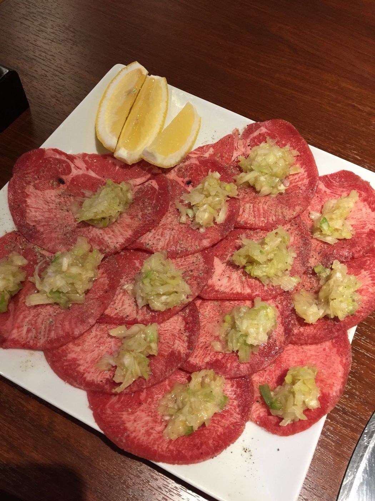
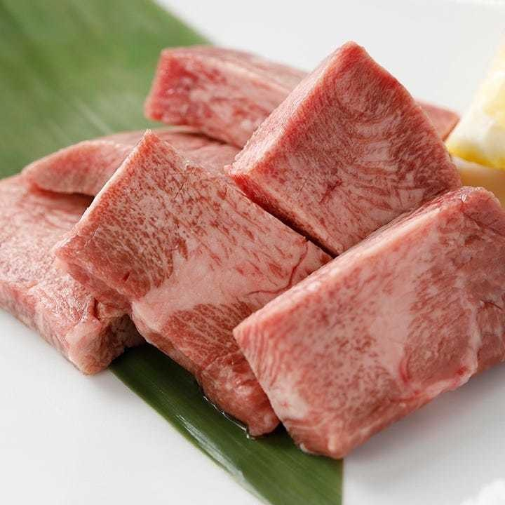
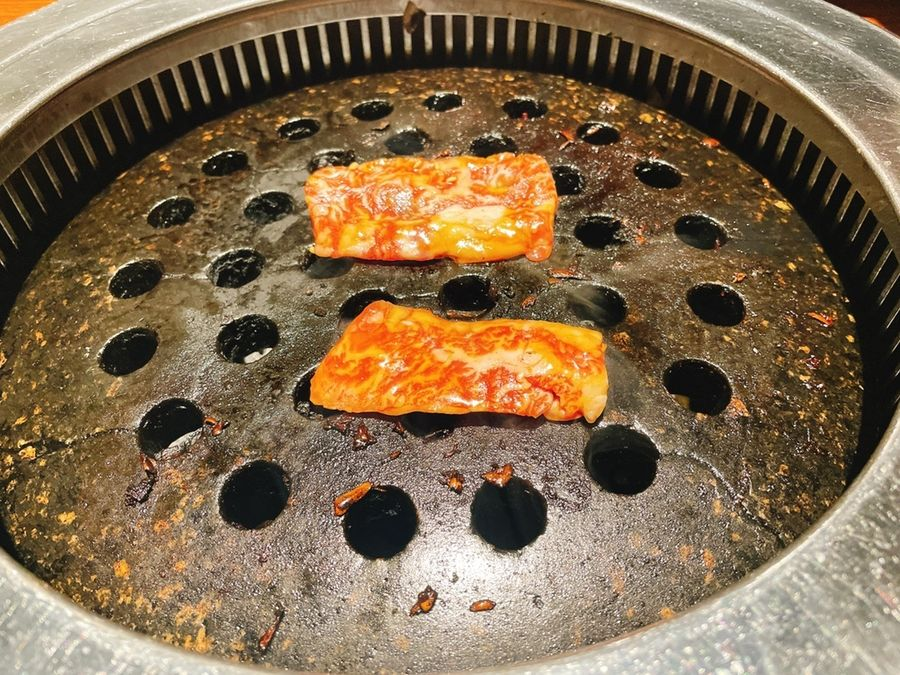
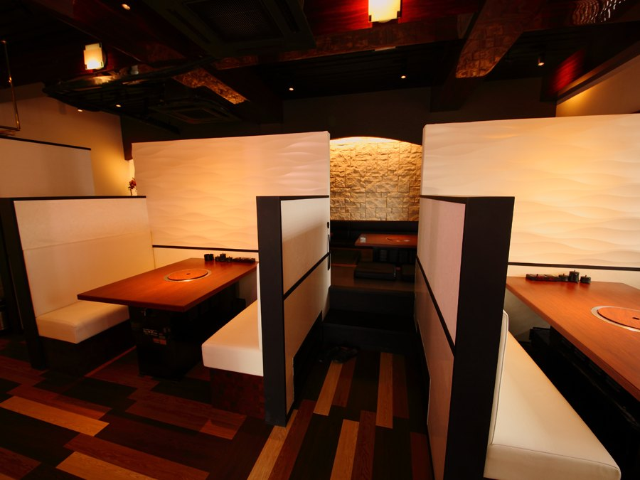
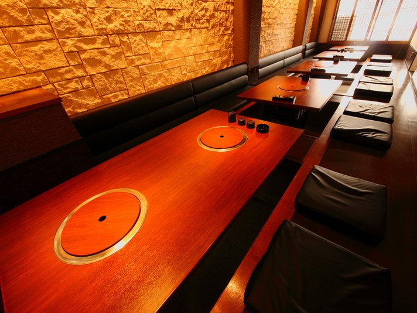
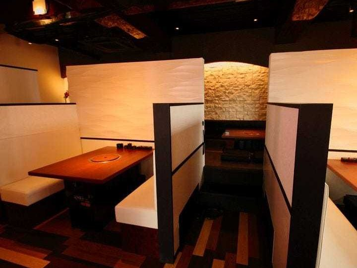
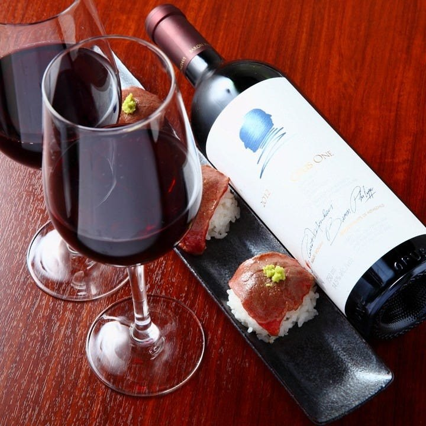
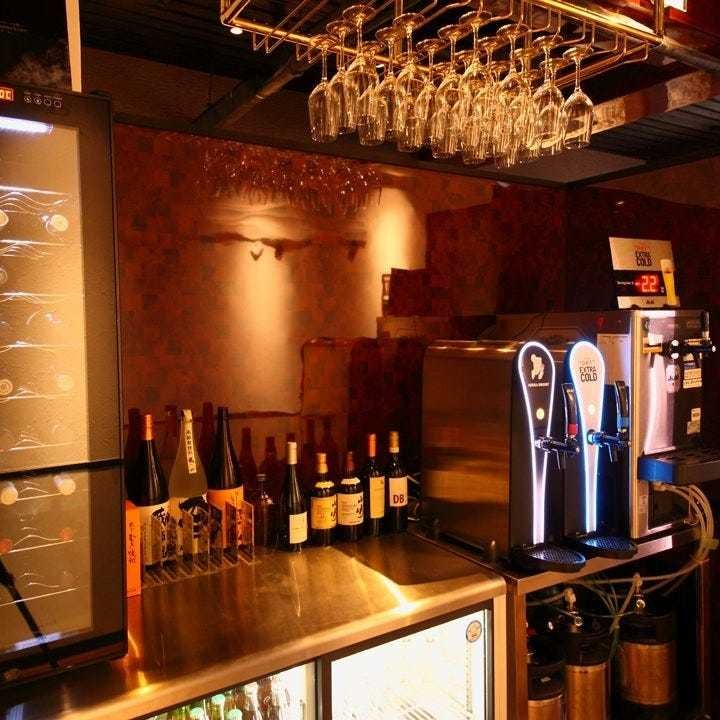

当店に来たら、まず食べていただきたい一品が、松阪牛の握りです。
霜降りが細かく、脂がしつこくない松阪牛を、軽く炙って握ります。
三貫でお出しし、一貫ずつの追加も承ります。



牛タンは、厚く切ることで本当の美味しさが分かります。薄いと肉の味も肉汁も少ない。だから当店のタンは厚切りです。
しっかりと切れ目を入れておりますので、厚くても簡単に噛み切れます。レモンか塩で召し上がってください。
いっぽう、薄切りのネギタン塩は、さっと焼いてすぐに。厚いものは厚く、薄いものは薄く、それぞれの切り方でお出しします。
当店では、鉄網ではなく、穴を開けた石でお肉を焼いていただきます。韓国産の角閃石を使った「石アミ」です。
店内に、こう掲げております。
牛脂は各卓にご用意しております。焦げが落ちなくなりましたら、お申しつけください。石アミをお取り替えいたします。
素材にはこだわっておりますが、それだけでは美味しい焼肉になりません。余計なことをしないように心がけております。お肉の味を引き出してくれるのが岩塩です。
ただ、少しにしてください。塩の味になってしまいますので。

喧騒を離れて、大切な方と美味しいお肉を味わっていただくために、この空間をつくりました。肉を味わっていただきたい、という当店の想いが形になった店内です。





焼肉に、赤ワインを合わせていただきたいと思っております。ワインセラーからお選びいただけるワインを、ご用意しております。
松阪牛の握りと、赤ワインを一杯。当店がいちばんお勧めしたい組み合わせです。
お飲みものとワインリストを見るお持ち帰りは、17時からお受けしております。
和牛上カルビ弁当、和牛上ロース弁当、ネギタン塩（薄切り）弁当、カルビ丼、豚カルビ丼をご用意しております。ごはんの大盛りも承ります。
お値段はお電話でお答えいたします。
「シメの冷麺：程よい酸味と出汁の効いたすっきりスープに、モチモチの麺。トマトとキュウリが爽やかで、焼肉の後にぴったりな最高のシメでした。店内の雰囲気も落ち着いており、接客も丁寧で気持ちよく過ごすことができました。」
食べログのクチコミより（2026年8月）
「小山在住、20数年ですが、間違いなく最高水準の焼肉屋さんでした。美味し過ぎて最後の冷麺まで写真撮るのも忘れて食べ続けてしまいました。」
食べログのクチコミより（2025年8月）
「5回目ですが何回来ても美味しいお店です 結婚記念日に予約しましたがピッタリでした また来たいと思います」
ホットペッパーグルメの口コミより（2026年6月）
「座敷席にご案内頂きました。綺麗で雰囲気も良かったです。店員さんが丁寧かつ親切で非常に良かったです。」
食べログのクチコミより（2025年3月）
JR小山駅の東口から、徒歩10分です。駅東通りのT．hamビル1階、「焼肉芯々」と筆で書かれた板が目印です。
| 住所 | 〒323-0022 栃木県小山市駅東通り2-32-13 T．hamビル1F |
|---|---|
| 電話 | 0285-38-7929 |
| 営業時間 |
月・火・木・日・祝日 18:00〜翌3:00（料理・お飲みもののラストオーダー 翌2:30） 金・土・祝前日 18:00〜翌5:00（料理のラストオーダー 翌4:00／お飲みもの 翌4:30） 状況によって早く閉める場合があります。 |
| 定休日 | 水曜日 |
| 駐車場 | 共有の無料駐車場がございます（12台）。 |
| お支払い | クレジットカードがお使いいただけます （VISA／Master／JCB／Diners）。 |